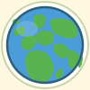
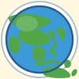

Atlantic View

Full Size
Medium
Favicon
Version 1: Classic Atlantic
Traditional globe view centered on the Atlantic Ocean. Shows the Americas on the left, Europe and Africa on the right. Classic Earth colors.
Americas
Europe
Africa
Greenland
Americas View

Full Size
Medium
Favicon
Version 2: Americas Centered
Full view of North, Central, and South America. Shows Alaska, Canada, USA, Mexico, Caribbean islands, and the full South American continent.
North America
Central America
South America
Caribbean
Europe/Africa View

Full Size
Medium
Favicon
Version 3: Eastern Hemisphere
Shows Europe, Africa, Middle East, Russia, and India. Includes UK, Ireland, Scandinavia, and Madagascar. The "Old World" view.
Europe
Africa
Russia
India
Asia/Pacific View

Full Size
Medium
Favicon
Version 4: Pacific Rim
Asia-Pacific centered view showing China, Japan, Southeast Asia, Indonesia, Philippines, Papua New Guinea, Australia, and New Zealand.
Asia
Japan
Australia
Pacific Islands
Global View
Full Size
Medium
Favicon
Version 5: Maximum Coverage
Tilted view optimized to show the most landmass possible. Includes subtle latitude lines, gradient land coloring, and arctic ice cap hint. Most "complete Earth" feel.
All continents
Latitude lines
Gradient colors
Arctic hint